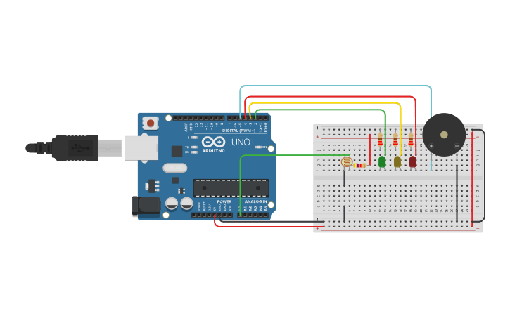

PROJECT 14: WATER LEVEL INDICATOR
Tank Overflow Alarm System
Mission Brief
Preveting water tanks from overflowing saves water and prevents damage. In this project, you will build a monitoring system that visualizes the water level using 3 LEDs (Low, Medium, High) and triggers an audio alarm (Buzzer) when the tank is full.
Key Components
- Arduino Uno R3
- LDR (Simulating Water Level Sensor)
- Piezo Buzzer
- 3x LEDs (Green, Yellow, Red)
- Resistors
- Jumper Wires
Circuit Diagram

Pin Connections
| Arduino Pin | Component Connection |
|---|---|
| Pin A0 | LDR Sensor Signal |
| Pin 2 | Green LED (Low Level) |
| Pin 3 | Yellow LED (Medium Level) |
| Pin 4 | Red LED (High Level) |
| Pin 5 | Buzzer Positive (+) |
Step-by-Step Instructions
- Sensor Input: Connect the LDR and a resistor as a voltage divider. Connect the junction point (signal) to Pin A0.
- Visual Output: Connect the Green LED to Pin 2, Yellow to Pin 3, and Red to Pin 4. Don't forget the resistors for each!
- Audio Output: Connect the Buzzer Positive leg (Longer/Marked +) to Pin 5 and the Negative leg to GND.
- Power: Ensure your breadboard power rails are connected to Arduino 5V and GND.
- Upload the code below.
Arduino Code
/* Project 14 - Water Level Indicator
* Uses LDR on A0 to simulate water level reading.
* Green LED (2) = Safe Level
* Yellow LED (3) = Medium Level
* Red LED (4) + Buzzer (5) = Overflow Warning
*/
const int sensorPin = A0;
const int greenLed = 2;
const int yellowLed = 3;
const int redLed = 4;
const int buzzer = 5;
void setup() {
pinMode(greenLed, OUTPUT);
pinMode(yellowLed, OUTPUT);
pinMode(redLed, OUTPUT);
pinMode(buzzer, OUTPUT);
Serial.begin(9600);
}
void loop() {
// Read the "Water Level" (Simulated by Light Intensity)
// Brighter Light = Higher Water Level reading
int waterLevel = analogRead(sensorPin);
// Print value to Serial Monitor for calibration
Serial.print("Water Level: ");
Serial.println(waterLevel);
// Reset all outputs first
digitalWrite(greenLed, LOW);
digitalWrite(yellowLed, LOW);
digitalWrite(redLed, LOW);
noTone(buzzer);
// LOGIC: Check levels
// Adjust these numbers (200, 500, 800) based on your LDR readings!
if (waterLevel > 200) {
digitalWrite(greenLed, HIGH); // Level 1 Reached
}
if (waterLevel > 500) {
digitalWrite(yellowLed, HIGH); // Level 2 Reached
}
if (waterLevel > 800) {
digitalWrite(redLed, HIGH); // Level 3 (FULL) Reached
tone(buzzer, 1000); // ALARM!
}
delay(100);
}
How It Works
- Accumulative Logic:
-
Bar Graph Effect:
Unlike the parking sensor (where only one light was on at a time), water fills from the bottom up. So if the level is High, the Medium and Low lights should also stay on. We achieve this by using separate `if` statements instead of `else if`. -
Thresholds:
We divide the analog range (0-1023) into zones.
> 200 = Low water.
> 500 = Half full.
> 800 = Dangerously full.
Expected Output
As you expose the LDR to more light (simulating rising water), the LEDs will turn on one by one: Green -> Green+Yellow -> Green+Yellow+Red. Once the Red LED turns on, the buzzer will start beeping to warn you of an overflow.
What You Learned
- How to create a multi-stage visual indicator (Bar Graph).
- Integrating audio alarms with sensor thresholds.
- Using Analog Inputs to monitor continuous variables (like fluid levels).
Next Steps / Extension Ideas
Try changing the code so the buzzer beeps intermittently (Beep... Silence... Beep) instead of one continuous tone when the tank is full. This is less annoying and sounds more like a real alarm!